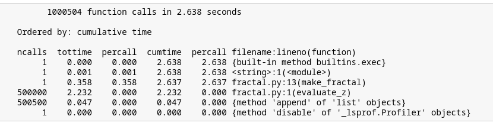
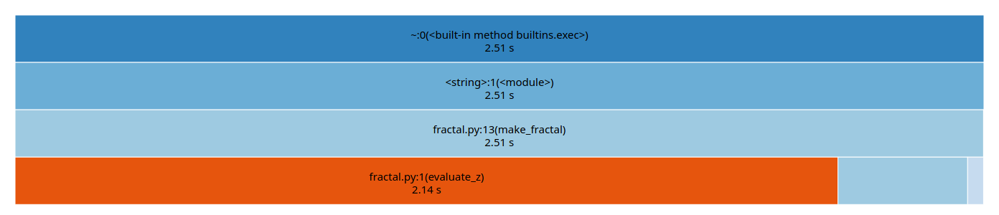

from IPython.display import YouTubeVideo, Markdown, SVG, Code
from functools import partial
YouTubeVideo_formato = partial(YouTubeVideo, modestbranding=1, disablekb=0,
width=640, height=360, autoplay=0, rel=0, showinfo=0)
%matplotlib inline
import numpy as np
import matplotlib.pyplot as plt
from functools import partial
2. Profiling¶
El primer paso antes de optimizar es identificar los sectores críticos o “cuellos de botella” de nuestro programa. A esto lo llamamos hacer un profiling de código
2.1. ¿Qué es profiling?¶
Se refiere a medir los
Tiempos de ejecución (total, por función, por linea)
Uso de recursos (memoria, cpu, disco)
de una rutina con el fin de encontrar aquellas secciones más lentas e ineficientes (sectores críticos)
Luego de identificarlas podemos reescribirlas u optimizarlas
En esta clase veremos como hacer un profiling de nuestro código en Python usando el ambiente Jupyter y las magias de IPython
Ejemplo de caso: Set de Julia
A modo de ejemplo haremos profiling de un script de Python que calcula el famoso fractal conocido como el Set de Julia
El set de Julia es un fractal asociado a la función
donde \(c \in \mathbb{C}\)
El script fractal.py tiene una implementación del set de Julia usando Python puro, es decir sin usar librerias
Code(filename="fractal.py")
def evaluate_z(zi, zr, maxiters=50, cr=-0.835, ci=-0.2321):
nit = 0
zi2 = zi**2
zr2 = zr**2
while zi2 + zr2 <= 4. and nit < maxiters:
zi = 2*zr*zi + ci
zr = zr2 - zi2 + cr
zr2 = zr**2
zi2 = zi**2
nit +=1
return nit
def make_fractal(N, maxiters=50):
image = []
for i in range(N):
row = []
for j in range(2*N):
zi = -1.0 + i*2/N
zr = -2.0 + j*2/N
row.append(evaluate_z(zi, zr, maxiters))
image.append(row)
return image
Si ejecutamos la función make_fractal con una resolución de 500 pixeles y 50 iteraciones el resultado es
from fractal import make_fractal, evaluate_z
fractal_image = make_fractal(N=500, maxiters=50)
fig, ax = plt.subplots(figsize=(8, 4), tight_layout=True)
ax.imshow(fractal_image, aspect='equal', cmap=plt.cm.viridis, origin='lower')
ax.axis('off');
2.2. Midiendo tiempo de ejecución¶
2.2.1. Tiempo total usando magias de IPython¶
A continuación revisaremos algunas magias de IPython que nos permiten medir el tiempo de ejecución de un script, función o expresión de Python de forma simple y conveniente
La primera es %time que se usa anteponiendose a una función
%time mi_resultado = mi_funcion(mis_argumentos)
Esto retorna algo similar a
CPU times: user 2.44 s, sys: 2.41 ms, total: 2.45 s
Wall time: 2.57 s
donde
Wall time: Es el tiempo total de un proceso/función/expresión desde su principio (lanzamiento) hasta su fin (retorno)
CPU time (total): Es el tiempo en que el CPU está dedicado procesando la tarea solicitada, siempre será menor que el Wall-time
La magia %time mide el tiempo de una linea de código
Si queremos medir el tiempo de todas las lineas de código de un bloque de ejecución se usa %%time
Ejemplos
Midamos el tiempo que demora en calcularse el fractal de Julia
Usaremos la magia %time
¿Cuánto demora en calcularse la función slow_function?
%time result1 = make_fractal(N=500, maxiters=50)
CPU times: user 2.32 s, sys: 0 ns, total: 2.32 s
Wall time: 2.33 s
¿Qué ocurre si medimos una segunda vez?
%time result2 = make_fractal(N=500, maxiters=50)
CPU times: user 2.31 s, sys: 0 ns, total: 2.31 s
Wall time: 2.33 s
np.allclose(result1, result2)
True
Notemos que que el resultado en ambos casos es idéntico, sin embargo, el tiempo de ejecución es ligeramente distinto
¿A qué se debe esto? Debemos considerar que cada vez que ejecutamos un código alteramos el estado de nuestro sistema (cache, memoria)
Por ende lo más correcto para medir el tiempo de nuestra rutina sería ejecutarla varias veces y calcular un promedio
2.2.2. La magía %timeit de IPython¶
Podemos medir el tiempo promedio de un script, función o expresión de Python de forma conveniente usando la magia timeit. Esta magia se basa en el módulo estándar de Python timeit
Esta magia tiene varios argumentos, a continuación revisaremos un subconjunto de ellos
-r<R>: Define que el algoritmo se repetira<R>veces y se retorna el tiempo promedio de dichas repeticiones-n<N>: Define que el algoritmo se ejecutará<N>veces seguidas (loop) en cada repetición-p<P>: Se usa una precisión de<P>dígitos en los resultados-q: No imprimir los resultados-o: Retorna un objetoTimeitResult, con esto podemos manipular, analizar y graficar los tiempos de ejecución
se pueden revisar los demás argumentos en la documentación. Esta magia se utiliza como
%timeit -r10 -n5 mi_funcion(mis_argumentos)
Que en pseudo código sería como
tiempos = []
for _ in range(10): # Repeticiones
t_inicio = time.now()
for _ in range(5): # Loop
mi_funcion(mis_argumentos)
t_fin = time.now()
tiempos.append(t_fin - t_inicio)
return sum(tiempos)/(N*R)
Es decir que timeit retorna un promedio de promedios
En general
<R>debe ser lo suficientemente grande para que los estadísticos que calculemos sean confiables<N>debe ser lo suficientemente grande para que el tiempo medido sea representativo demi_funcion
Por ende si mi_funcion toma menos de 10 microsegundos es recomendable subir el \(N\) de lo contrario el tiempo podría estar dominado por otros procesos como el garbage collector de Python
Notar que si no se especifica <N> la magia buscará de forma automática un valor adecuado
2.2.3. Ejercicio formativo¶
Cree cinco fractales usando
maxiters=50y los valoresN[5, 10, 50, 100, 500] y gráfique cada uno para apreciar sus diferenciasUse
%timeitpara calcular el tiempo promedio y la desviación estándar de la funciónmake_fractalconN=500ymaxiters=50. Utilice<R>=10Repita lo anterior para cada uno de los valores de
Nusados anteriormente, guarde los tiempos asociados (Hint: estudie el atributo-o) ¿Cúal es el tiempo mínimo, máximo y promedio para cadaN?Muestre una gráfica de \(N\) vs tiempo total con barras de error. Considere escalamiento logarítmico para los ejes
Solución con comentarios
YouTubeVideo_formato('8ttEskG28DQ')
2.2.4. Tiempo función por función usando prun¶
El módulo de Python cProfile mide la cantidad de llamadas y el tiempo de cada función ejecutada por nuestra rutina
La magia de IPython %prun nos da una forma conveniente para usar este módulo
%prun mi_funcion()
Esto retorna una tabla con las siguientes filas
ncalls: Número de veces que se llama la función
tottime: Tiempo total en dicha función (sin contar subfunciones)
percall: ttime/ncalls
cumtime: Tiempo total en dicha función y sus subfunciones (tiempo de función recursiva)
percall: cumtime/ncalls
Opciones importantes de %prun
-spara que el resultado quede ordenado según una fila en particular-lsi queremos especificar la cantidad de líneas a mostrar en la tabla
Ejemplo
Usemos prun en la función make_fractal ordenando según el tiempo acumulado
%prun -s cumtime make_fractal(N=500, maxiters=50)
Esto levantará una tabla en tu navegador como la que se muestra a continuación
De la tabla vemos que
La función con mayor tiempo total es
evaluate_zque está en la linea 1 de fractal.pyevaluate_z()se llama 500.000 veces
En general el tiempo total es mayor que el que medimos con time y timeit. Esto se debe al overhead de prun
Visualizando el resultado de prun
Podemos generar una visualización de los resultados de cProfile en nuestro navegador usando SnakeViz. Puedes instalar la librería usando el siguiente comando de conda
conda install snakeviz
Lo cual creará un ejecutable snakeviz. Luego cargamos la extensión para jupyter. Esto habilitará la magia del mismo nombre que podemos usar como
%load_ext snakeviz
%snakeviz -t make_fractal(N=500, maxiters=50)
obtiendo un resultado como el que muestra la imagen a continuación
{kind=link}
Notar que la opción -t carga el gráfico en una pestaña de navegador nueva.
Esta herramienta puede mejorar considerablemente el estudio de nuestro código cuando se tiene una gran cantidad de funciones en distintas jerarquías
cProfile sin IPython
Si no contamos con el ambiente IPython podemos usar cProfile directamente sobre un script de Python con
python -m cProfile -o tabla.prof script.py
Donde el resultado queda grabado en el archivo tabla.prof
2.2.5. Tiempo linea a linea con lprun¶
Hemos visto como medir el tiempo total de un código en Python y el tiempo desglosado por cada llamado a función de dicho código. Pero en ocasiones puede resultar más informativo estudiar el tiempo de ejecución de cada linea de nuestro código por separado
Esto corresponde a un tipo de profiling llamado line by line
Podemos hacer este tipo de profiling usando la extensión externa line_profiler. Puedes instalar esta extensión con el siguiente comando
conda install line_profiler
Una vez instalada debes cargar la extensión, lo cual habilitará una nueva magia llamada %lprun. La magia %lprun que funciona de forma similar a prun
Ejemplo
%load_ext line_profiler
%lprun -f mi_método mi_rutina
Esta magia requiere que se especifique un método o función dentro de la rutina con el argumento -f. Ejecutar la magia levantará una pestaña con una tabla
La tabla tiene una fila por linea de código y las siguientes columnas
Line: Número de la linea dentro del código fuente
Hits: La cantidad de veces que se llama a esa linea
Time: Tiempo total de dicha linea
Per hit: Tiempo total dividido la cantidad de llamadas
2.2.6. Ejercicio formativo¶
Realice un line by line profiling de
make_fractal(500, 50). ¿Cuál es la linea más costosa? ¿Qué porcentaje representa del total de tiempo de la función?Realice un profiling de la función correspondiente a la linea más costosa
Solución con comentarios
YouTubeVideo_formato('n6asVV2LfHM')
2.3. Medir uso de memoria¶
2.3.1. Memoría total y linea a linea con magias de IPython¶
De forma muy similar a timeit para medir el tiempo de una rutina existe la magia memit para medir la cantidad de memoría usada por una rutina
La magia es externa a IPython y debemos instalarla con
conda install memory_profiler
Luego se habilita y usa con
%load_ext memory_profiler
%memit funcion()
Que retorna la cantidad de memoria RAM usada por funcion
Con esto también se habilita la magia %mprun para medir el uso de memoria linea a linea
2.3.2. Extra: Uso de memoria con módulo tracemalloc¶
Python tiene un módulo estándar llamado tracemalloc que permite calcular estadísticas sobre la memoria alocada por un proceso o script de Python
import tracemalloc
tracemalloc.start()
# Acá se corre el código que quieres estudiar
snapshot = tracemalloc.take_snapshot()
top_stats = snapshot.statistics('lineno')